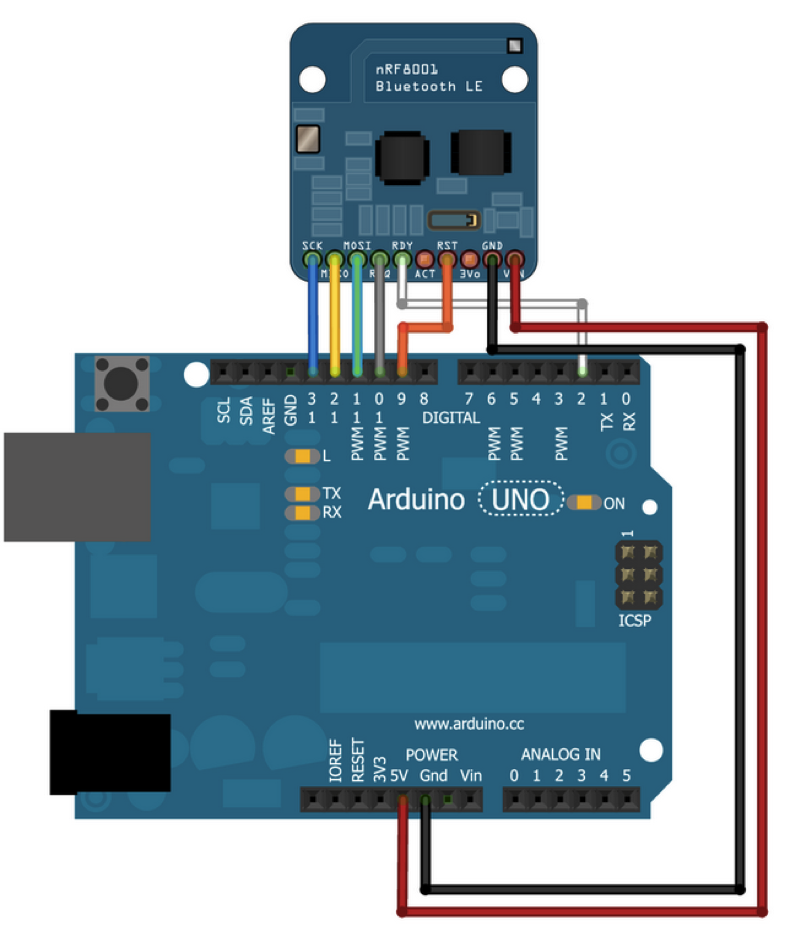
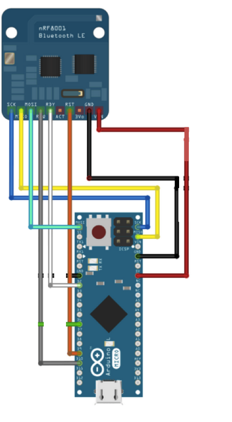

Electrical Design
The electrical system uses an Arduino microcontroller and a Bluetooth Low Energy shield to actuate a servo. In each iteration shown below, more and more functionality is added to the Arduino Bluetooth communication and the electrical system as a whole. Our final bLOCK contains a fully functioning electrical system that is battery-powered, rechargeable, and continuously communicates with your phone to keep your bike safe.
Iteration 1
In this iteration, multiple design decisions regarding the electrical system for the project had to be made. The microcontroller we would run our code on and which Bluetooth Low Energy (BLE) module for our selected microcontroller had to be purchased. After some initial research, we had the idea of using a Tessel as our microcontroller which already has a designated BLE module. After talking to our instructors about this decision, we pulled away from the idea due to the fact that none of the instructors or course assistants had experience working with a Tessel. In addition, working with a Tessel meant writing code in JavaScript, which is a language neither our electrical or software team had a lot of experience in.
As a result, at the conclusion of our first iteration, we pivoted to using an Arduino for a microcontroller. We then had the option of picking from a variety of BLE shields from makers such as RedBearLabs, SeeedStudio, or Adafruit. We ultimately ended up choosing the Adafruit shield because of the documentation they provide for their products. We knew that after we got the shield, we could set it up and use it very quickly following their tutorials.
For the first iteration of bLOCK, the electrical system consisted of three components: an Adafruit BLE shield, an Arduino Uno, and a servo. The electrical system took as input a single character sent from a pre-built app, Adafruit’s nRF UART app, that interfaced with our BLE shield. On the Arduino side, the Adafruit BLE UART library provided all the functionality needed to read data sent over Bluetooth from the phone.

Taking that character as input, the Arduino actuated the servo to move a cardboard circle between locked and unlocked positions. For this very simple iteration, the Arduino was not sending data back to the phone and there was no form of Bluetooth security between the Arduino and the phone. That is, any phone running the same app would be able to connect and write data to the Arduino. If they provided the correct characters, the lock would unlock.
The Adafruit tutorial that we heavily relied on in this iteration is found here.
Iteration 2
In our second iteration, there are no changes to the electrical diagram shown in Iteration 1. However, a lot more functionality was added to the Arduino in terms of reading and writing data over Bluetooth to the phone. The electrical system in this iteration was also fully integrated into the locking mechanism itself.
In our second iteration, there are no changes to the electrical diagram shown in Iteration 1. However, a lot more functionality was added to the Arduino in terms of reading and writing data over Bluetooth to the phone. The electrical system in this iteration was also fully integrated into the locking mechanism itself.
Using more of the Adafruit BLE UART library for the Arduino, the Arduino Uno was now successfully connecting and interfacing with the first iteration of our app. In this iteration, the app consisted of a toggle button that switched the states of the lock when pressed: from locked to unlocked and vice versa. This toggle sent a designated character to the Arduino over Bluetooth, much like in Iteration 1, that then actuated a servo.
In addition, when the Arduino and the phone connect, the phone (as the master in this configuration) reads RSSI values. RSSI stands for Received Signal Strength Indicator and tells the phone how strong the connection between the two devices is. As the phone moves further away from the Arduino, the RSSI gets more and more negative in value.
In our second iteration, the Arduino, in addition to receiving lock and unlock input from the app, is also receiving RSSI values. When the user stands at a certain distance away from the lock the bike lock automatically locks. Similarly, when the user stands close to the lock, the bike lock automatically unlocks. In this iteration, the user simply needs to stand close enough or far away enough from the lock for the servo to actuate. The lock can still always be controlled via the app’s toggle button.
Iteration 3
In our third iteration, we swapped out the Arduino Uno, which was far larger a microcontroller than we needed, for an Arduino Micro. We had to choose between the Arduino Nano and the Arduino Micro. Ultimately, we chose the Micro despite it being the more expensive of the two, because the Nano is no longer produced and the Micro had all of the functionality we needed for our bLOCK.
In addition to swapping in the Micro, in this iteration we powered the lock with a 9V battery simply to check that we could power our bike lock with a battery. We then began to scope out our final battery, because we did not need a full 9V. We decided to order a 3.3 V 850 mAh LiPo battery, in addition to a boost board that would convert the 3.3 V to 5 V. The boost board also added the ability to recharge the lock.
 In our previous iteration, we worked briefly with the RSSI signal, transmitted from the phone. Our primary goal in the previous iteration was simply to successfully reading the correct RSSI value on the Arduino. However, the RSSI signal is very noisy and jumps around a lot. In addition, our previous iteration simply thresholds the RSSI value. Ultimately, our ideal use case would be to have the lock automatically unlock when the user walks towards the lock and lock when the user is walking away.
Using the RSSI value as a rough approximation of position, we proceed to average the RSSI values in the form of a rolling average. Each new RSSI value adjusts the average slightly. We then take the difference between the averages and produce a rolling averages of the differences. This average of the differences between the previous RSSI average and the current RSSI average smooth out our RSSI signals enough to determine the direction the user is moving. In this iteration, we successfully implemented our desired RSSI functionality: walking towards the lock automatically unlocks it while walking away automatically locks it.
Using the battery-powered Micro, we scoped the total power consumption of the lock. Ideally, we want our bike lock to go without charging for a week. Using the battery we selected, our system can only be powered for approximately 17.5 hours. We countered this by setting a sleep mode for the Arduino, which would reduce power consumption of the lock. The BLE shield connects to an interrupt pin on the Arduino and we were hoping to implement a sleep function that would then wake up the Arduino when Bluetooth data from a phone was being transmitted.
However, given our time constraints, we were unable to implement this functionality by the end of our final iteration.
Final Iteration
In our final iteration, our electrical system now has a 3.3 V LiPo battery, a boost board, an Arduino Micro, the Adafruit BLE shield, and a servo. The boost board gives the user the ability to recharge their bike lock. Based on our current specs, the battery will last under a day, so the user will have to charge the bike lock each night.
An extension of our final iteration would be to implement sleep functionality in the Arduino, which would decrease the power consumption of our electrical system. The BLE shield iteself, to run continuously, only needs 1 mA while the entire system requires around 51 mA, with servo actuation peaking at 100 mA.
The electrical system for our final iteration contains a 3.3 V battery connected to our boost board. The EN, VCC, and GND pins from the boost board all connect to a piece of protoboard with a switch. The switch controls whether the bike lock is on or off. From the same protoboard, VCC (which is 5V) and GND connect to 5V and GND rails, which then power the Arduino Micro, the Adafruit BLE shield, and the servo.
In addition to the new electrical system, the Arduino was updated with a specific protocol for interacting with the phone. To combat rapid connection/disconnection state changes, we implemented a call response protocol that quickly tests whether the phone and Arduino can communicate with each other.
After completing this call-response test, the Arduino checks in its permanent memory (EEPROM) if the bike lock has been paired with a phone before. If it has a recorded passcode in its memory, then the Arduino waits to receive the 4 digit passcode that is the first item the phone sends. If the received passcode does not match the one in memory, the connection is terminated and the phone will not attempt to connect to the Arduino again, as long as the app is not restarted
Only if the received passcode matches the one in memory does the Arduino concede control of the locking mechanism itself to the phone. If both codes match, the phone receives lock control and can actuate the servo to change the state of the lock.

The Components
This is a picture of all of the components placed inside the box.

Electrical Final
Side View of the components. The wires are placed inside keeping the electrical components secure.